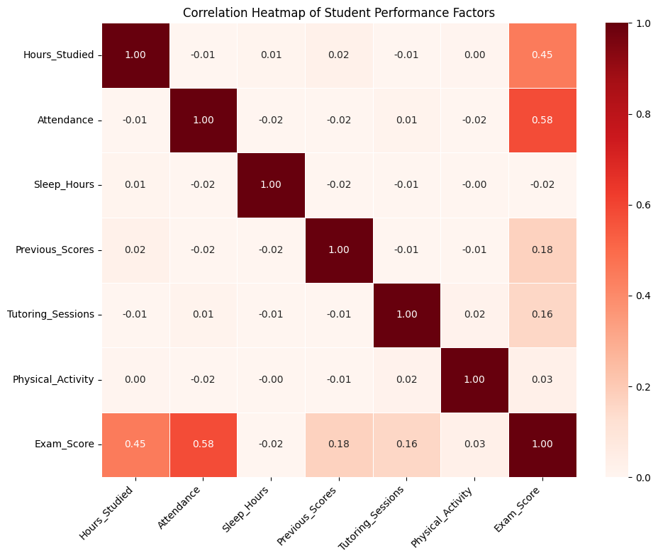

This correlation heatmap highlights the strength and direction of relationships between key student performance factors. The most notable takeaway is that attendance (0.58) and hours studied (0.45) show the strongest positive correlations with exam scores, suggesting that consistent engagement and study time are the most influential contributors to academic performance. In contrast, factors such as sleep hours, physical activity, and tutoring sessions exhibit very weak correlations. The visualization suggests that behavioral-based factors contribute more to exam performance, than other variables.
